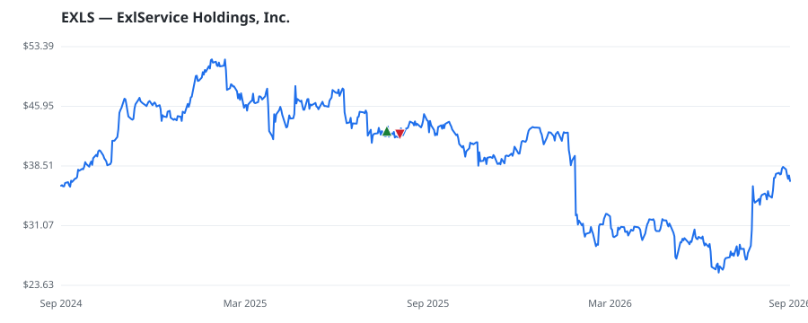

bullish · bearish · n/a — dots: price>SMA10 · SMA10>SMA50 · SMA50>SMA200 · up>down volume (20d)
Software & Services · mid cap
Members who bought EXLS earned a dollar-weighted -0.6% from their disclosure dates, versus +1.3% for the S&P 500 over the same holding windows (-1.9% alpha).

▲ green = a disclosed purchase · ▼ red = a disclosed sale (plotted on disclosure date)
ExlService Holdings Inc. is a data analytics and digital operations company that provides data and AI-led solutions and technology-enabled services to clients across industries. The company has four reportable segments. The Insurance segment provides services such as claims management, underwriting support, and analytics solutions. The Healthcare and Life Sciences segment offers data-driven solutions and services to healthcare payers, providers, and life sciences organizations. The Banking, Capital Markets and Diversified Industries segment delivers solutions across financial services and othe SERVICES-BUSINESS SERVICES, NEC · website
| Revenue | $1.8B | Net income | $198.3M |
|---|---|---|---|
| Operating income | $263.6M | Diluted EPS | $1.21 |
| Assets | $1.6B | Equity | $929.9M |
| Member | Chamber | Out-performer | Disclosed buys $ | Return on buys |
|---|---|---|---|---|
| Markwayne Mullin | senate | yes | $8K | -0.6% |
Disclosed $ figures are bracket midpoints — filings report ranges (e.g. $1,001–$15,000), not exact amounts.